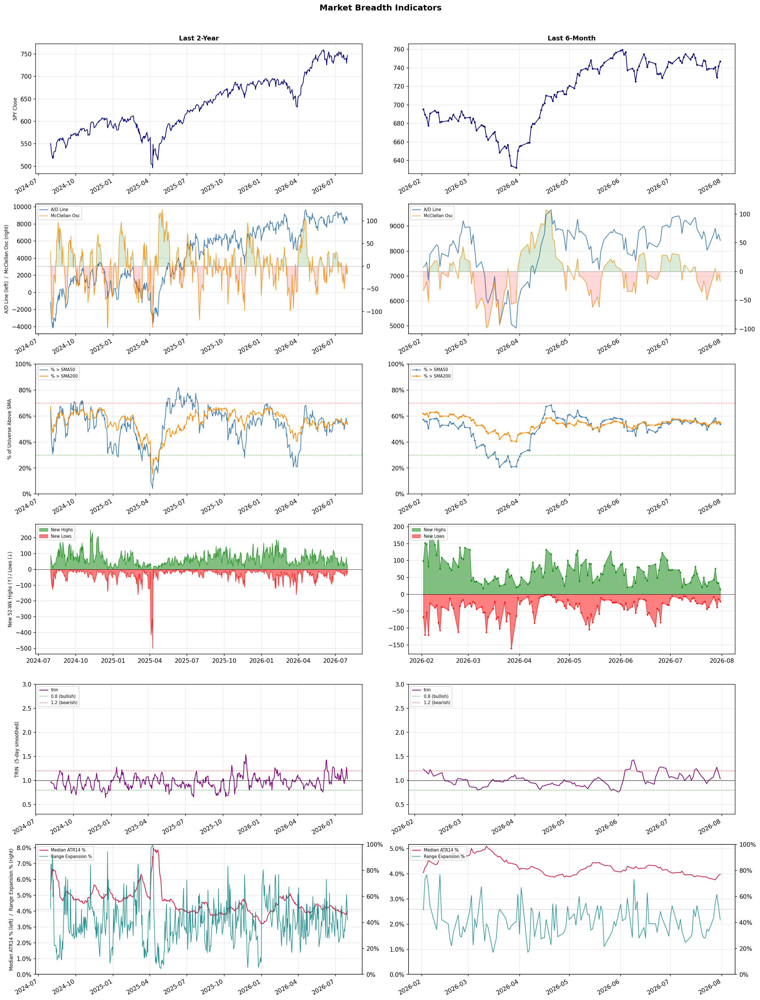

A daily market breadth and sector rotation report for active investors
| Item | Read |
|---|---|
| Regime downgraded | Selective Risk-On → Neutral |
| Regime | Neutral |
| Risk posture | Cautious |
| Universe | 1,336 stocks tracked · 15 new 52-week highs · 30 active swing setups |
| Breadth | 53.7% of tracked stocks are above SMA50 — neutral range, new lows exceed new highs (21 vs 15), McClellan oscillator (breadth momentum) is negative at -16.7 |
| Leadership | Oil & Gas Refining & Marketing, Insurance - Life, and Banks - Diversified |
| Weakest groups | Uranium, Other Industrial Metals & Mining, and Aerospace & Defense |
Use this report to prioritize research and chart review; validate entries, stops, liquidity, earnings, and risk before acting.
| Item | Read |
|---|---|
| Primary read | Neutral regime with Cautious risk posture. |
| Research queue | PBF, DINO, MPC, PSX, UGP |
| Leadership focus | Oil & Gas Refining & Marketing, Insurance - Life, and Banks - Diversified |
| Caution list | Uranium, Other Industrial Metals & Mining, and Aerospace & Defense |
| Review prompt | Check extension risk, chart location, fundamentals, valuation, and earnings before using any research row. |
| Item | Read |
|---|---|
| Primary read | 3 active risk warnings; use screen output as watchlist input only. |
| Bullish screens | BBVA, NEOG, FSLY, UTZ, KOS |
| Bearish screens | WVE, OPK, BXMT, STWD |
| Alerts / levels | Automated trigger, stop, ATR, liquidity, reward/risk, and event-risk levels are pending future enrichment. |
| Review prompt | Open the linked chart, define trigger and invalidation, then check liquidity and event risk independently. |
Risk Posture: Cautious — screen backdrop is selective; prioritize research in top-ranked groups
Metric context: McClellan below -50 = elevated selling pressure; below -100 = washout territory. Range Expansion = share of stocks with daily range above their 20-day average. Signal Density = share of tracked names appearing in signal screens.
| Breadth Date | % > SMA50 | % > SMA200 | New Highs | New Lows | McClellan | Median Range | Avg Range | Median ATR14 | Range Expansion | Signal Density |
|---|---|---|---|---|---|---|---|---|---|---|
| 2026-07-31 | 53.7% | 55.0% | 15 | 21 | -16.7 | 3.4% | 4.2% | 4.0% | 41.9% | 10.1% |

Regime downgraded: Selective Risk-On → Neutral
Prior comparison date: July 30, 2026
| Metric | Prior | Current | Change |
|---|---|---|---|
| Regime | Selective Risk-On | Neutral | changed |
| Risk Posture | Selective | Cautious | changed |
| % > SMA50 | 55.3% | 53.7% | -1.6 pts |
| % > SMA200 | 55.7% | 55.0% | -0.7 pts |
| New Highs | 33 | 15 | -18 |
| New Lows | 14 | 21 | -7 |
Top-10 industries entering: Leisure and Travel Services. Top-10 industries leaving: Medical Devices and Medical Instruments & Supplies. New multi-signal long setups: BBVA, ELVN, FSLY, NEOG, PGEN, UTZ. New multi-signal short setups: STWD, WVE.
| Status | Tickers | Read |
|---|---|---|
| Added | AS, BBVA, BFLY, CCL, ELVN, NEOG, OPK, PBR | New technical screen matches vs prior report. |
| Removed | ABVX, BAX, BDX, BLDR, BRSL, CVE, EC, FIVN | No longer present in today's technical screen matches. |
| Still Active | BP, BXMT, FSLY, HNGE, KOS, LNG, PSNL, TAK | Appeared in both current and prior reports. |
| Promoted | FSLY | Model Screen Score improved by at least 15 points. |
| Downgraded | none | Model Screen Score declined by at least 15 points. |
| Direction | Industry | ETF | Prior Rank | Current Rank | Days | Rank Change |
|---|---|---|---|---|---|---|
| Rose | Oil & Gas Refining & Marketing | CRAK | 84 | 1 | 42 | +83 |
| Rose | Oil & Gas Integrated | XLE | 84 | 7 | 28 | +77 |
| Rose | Insurance Brokers | N/A | 85 | 20 | 42 | +65 |
| Rose | Apparel Retail | XRT | 69 | 5 | 28 | +64 |
| Rose | Software - Application | IGV | 77 | 14 | 42 | +63 |
Bull: The Oil & Gas Refining & Marketing sector is experiencing a bullish trend primarily due to a combination of rising oil prices and increased demand for refined products, as indicated by the recent headlines highlighting the Oil Refiners ETF (CRAK) hitting a new 52-week high and being recognized as a top-performing area. Additionally, the optimism surrounding potential de-escalation in the Middle East, as noted in the headlines, could further stabilize supply chains and bolster refining margins, positioning companies like Marathon Petroleum favorably against their peers. This renewed interest in the sector after years of stagnation suggests a robust recovery and favorable market conditions for refiners moving forward.
Bear: While the recent rise in the Oil & Gas Refining & Marketing sector, as evidenced by CRAK hitting a new 52-week high, may appear promising, it is essential to consider the volatility inherent in oil prices and the potential for geopolitical tensions to escalate rather than de-escalate. Additionally, the long-term transition toward renewable energy and increasing regulatory pressures on fossil fuels could undermine the sustainability of refining margins, suggesting that the current bullish sentiment may be overly optimistic and could lead to a significant correction in the sector.
Verdict: The Oil & Gas Refining & Marketing sector is experiencing a bullish trend driven by rising oil prices and increased demand for refined products, bolstered by optimism around geopolitical stability in the Middle East. However, investors should remain cautious of the inherent volatility in oil prices and the long-term risks posed by the transition to renewable energy and regulatory pressures, which could undermine refining margins and lead to potential corrections in the sector. It is advisable to closely monitor geopolitical developments and regulatory changes while assessing investment positions in this space.
Sources: Yahoo Finance, Google News
Bull: The Oil & Gas Integrated sector is experiencing a rise in relative strength primarily due to increasing fair value estimates for major oil stocks, driven by higher oil prices, as highlighted by Morningstar and Moomoo. This bullish sentiment is further supported by recent sector updates indicating a consistent advance in energy stocks, suggesting strong investor confidence and a favorable macroeconomic environment for oil companies amidst mixed performance in other sectors.
Bear: While rising oil prices and increasing fair value estimates may seem positive, they mask several underlying vulnerabilities in the oil and gas sector. The global push for renewable energy and stricter climate regulations pose significant long-term risks to traditional oil companies, potentially leading to reduced demand and profitability. Furthermore, the recent uptick in energy stocks could be a short-term reaction to market volatility rather than a sustainable trend, as broader economic uncertainties and geopolitical tensions could quickly reverse investor sentiment.
Verdict: The Oil & Gas Integrated sector's rise is primarily driven by increasing oil prices and higher fair value estimates for major oil stocks, reflecting strong investor confidence in the sector's current profitability. However, investors should remain cautious of the significant long-term risks posed by the global shift towards renewable energy and potential regulatory changes, which could undermine demand and profitability for traditional oil companies.
Sources: Yahoo Finance, Google News
Bull: The relative strength of the Insurance Brokers industry is likely rising due to robust demand and ongoing mergers and acquisitions (M&A), as highlighted by Yahoo Finance's mention of four brokerage stocks poised to benefit from these trends. Additionally, the strong earnings performance of companies like Ryan Specialty, as noted in StockStory, suggests that despite recent market volatility and fears surrounding AI disruption, the underlying fundamentals of the industry remain solid, positioning it for growth as it adapts to evolving market conditions.
Bear: While the relative strength of the Insurance Brokers industry may appear promising, the recent headlines indicate significant disruption fears stemming from advancements in AI technology, which could fundamentally alter the brokerage landscape and erode traditional revenue streams. Moreover, the decline from five-year highs and compressing multiples suggest that investor sentiment is shifting, reflecting concerns about the sustainability of current valuations in a rapidly evolving market, rather than a solid foundation for growth. The strong earnings of select companies like Ryan Specialty may not be indicative of the broader industry's health, especially if AI-driven efficiencies begin to undermine traditional brokerage models.
Verdict: The Insurance Brokers industry is likely experiencing rising strength due to robust demand and strategic M&A activity, which are driving growth and solid earnings for key players like Ryan Specialty. However, a significant risk looms from advancements in AI technology, which could disrupt traditional brokerage models and lead to a decline in revenue streams, potentially undermining the industry's overall stability and investor confidence. Investors should closely monitor AI developments and their impact on industry valuations as they consider their positions.
Sources: Google News
Bull: The Apparel Retail sector is experiencing a rise in relative strength primarily due to positive sentiment surrounding consumer spending, as indicated by the bullish performance of major players like Amazon, which suggests robust demand in the retail space. Additionally, the focus on growth opportunities within the sector, highlighted by articles discussing the best retail stocks for 2026 and the potential of specific apparel stocks, further reinforces investor confidence in the industry's resilience and future growth prospects, despite broader market fluctuations influenced by tech earnings and interest rate announcements.
Bear: While the Apparel Retail sector may currently exhibit rising relative strength, this optimism is largely driven by short-term sentiment and not necessarily reflective of sustainable demand. The broader economic environment remains precarious, with potential headwinds from rising interest rates that could dampen consumer spending, especially in discretionary categories like apparel. Additionally, the focus on growth opportunities may overlook the increasing competition and margin pressures that many retailers face, particularly as e-commerce giants like Amazon continue to dominate the landscape, potentially squeezing smaller players and leading to a more volatile retail environment.
Verdict: The Apparel Retail sector's current rise in relative strength is primarily driven by positive consumer sentiment and strong demand indicators, as evidenced by the performance of major players like Amazon. However, a key risk lies in the potential impact of rising interest rates on consumer spending, which could disproportionately affect discretionary spending in apparel and lead to increased competition and margin pressures for retailers. Investors should remain cautious and monitor economic indicators closely to assess the sustainability of this trend.
Sources: Yahoo Finance, Google News
Bull: The Software - Application sector is experiencing a rise in relative strength primarily due to the resilience of key players amidst broader market fluctuations, as highlighted by the positive sentiment surrounding tech earnings, particularly from Amazon, which has bolstered investor confidence. Additionally, the sector's ability to withstand potential threats from AI, as noted in the headlines, indicates strong fundamentals and adaptability, positioning it favorably compared to other industries that may be more vulnerable to macroeconomic pressures. This is further supported by Citi's identification of top picks within the sector, suggesting a bullish outlook among analysts.
Bear: While the relative strength of the Software - Application sector may appear promising, it is crucial to recognize that this rise is largely driven by a few standout companies, such as Amazon, rather than broad-based sector strength. Additionally, the headlines indicate significant volatility, with stocks like Guidewire Software experiencing steep declines amidst sector-wide selling, suggesting underlying weakness that could be exacerbated by rising interest rates and increasing competition from AI. This indicates that the sector may be more fragile than it seems, with potential headwinds that could undermine its current momentum.
Verdict: The Software - Application sector's rise is primarily driven by strong earnings from key players like Amazon, which have instilled confidence among investors and highlighted the sector's resilience against macroeconomic pressures. However, the reliance on a few standout companies raises concerns about underlying fragility, especially in light of rising interest rates and intensifying competition from AI, which could pose significant risks to the sector's momentum. Investors should closely monitor these dynamics and consider diversifying their exposure to mitigate potential vulnerabilities.
Sources: Yahoo Finance, Google News
| Direction | Industry | ETF | Prior Rank | Current Rank | Days | Rank Change |
|---|---|---|---|---|---|---|
| Fell | Semiconductors | SOXX | 4 | 78 | 42 | -74 |
| Fell | Electrical Equipment & Parts | XLI | 9 | 82 | 42 | -73 |
| Fell | Electronic Components | XLK | 1 | 71 | 42 | -70 |
| Fell | Semiconductor Equipment & Materials | SOXX | 3 | 66 | 42 | -63 |
| Fell | Solar | TAN | 26 | 85 | 42 | -59 |
Bear: While the recent rally in AI-chip stocks like Intel and AMD may seem promising, it is essential to recognize that this bounce could be short-lived, as the broader semiconductor sector has already shed over $1 trillion in market value. The mixed earnings reports, particularly the weakness from major players like Apple, indicate that demand for semiconductor products may be faltering, which could signal deeper issues within the industry. Furthermore, the risk-on sentiment may not be sustainable, as macroeconomic pressures and potential supply chain disruptions continue to loom, casting doubt on the longevity of any recovery in semiconductor stocks.
Bull: The semiconductor industry is experiencing a decline in relative strength primarily due to a significant selloff, which has led to a loss of over $1 trillion in market value for companies driving the AI boom, as highlighted in the CNBC headline. This downturn has been exacerbated by mixed earnings reports, such as Apple's weakness overshadowing positive results from Amazon, creating a risk-off sentiment that impacts investor confidence in chip stocks. However, the recent rally in AI-chip stocks like Intel and AMD, alongside BofA's bullish outlook on top semiconductor picks, suggests that this sector may be poised for a rebound as the market stabilizes.
Verdict: The semiconductor industry's decline is primarily driven by a substantial selloff resulting in over $1 trillion in lost market value, compounded by mixed earnings reports that reveal weakening demand, particularly from key players like Apple. While there are signs of a potential rebound in AI-chip stocks, the key risk remains the broader economic pressures and supply chain uncertainties that could hinder a sustainable recovery. Investors should approach this sector cautiously, focusing on companies with strong fundamentals and clear growth prospects in the AI space.
Sources: Yahoo Finance, Google News
Bear: While the bull analyst attributes the decline in the Electrical Equipment & Parts sector's relative strength to broader market dynamics and a shift in investor sentiment towards manufacturing resilience, this overlooks the fundamental challenges facing the sector itself. Key headwinds such as rising input costs, supply chain disruptions, and increasing competition from alternative energy solutions are likely to weigh heavily on profitability and growth prospects, making the sector vulnerable even in a generally bullish industrial environment. Furthermore, the mixed earnings reports from major tech companies indicate a potential slowdown in overall economic momentum, which could further dampen demand for electrical equipment and parts.
Bull: The Electrical Equipment & Parts sector is experiencing a decline in relative strength primarily due to broader market dynamics influenced by mixed earnings reports from major tech companies like Amazon and Apple, as highlighted in the recent headlines. Additionally, the focus on manufacturing resilience and the bullish sentiment around industrial stocks suggests that investors may be reallocating capital towards sectors perceived as more robust, further pressuring the relative performance of the Electrical Equipment & Parts industry within the industrials sector.
Verdict: The Electrical Equipment & Parts sector's decline appears driven by a combination of broader market dynamics, including mixed earnings from major tech companies and a shift in investor focus towards more resilient manufacturing sectors. However, the key risk lies in the sector's fundamental challenges, such as rising input costs, supply chain disruptions, and intensified competition from alternative energy solutions, which could significantly impact profitability and growth prospects. Investors should closely monitor these factors, as they may indicate a prolonged downturn in demand for electrical equipment and parts.
Sources: Yahoo Finance, Google News
Bear: While the bull analyst attributes the sector's relative weakness to mixed performance among tech stocks, this overlooks the fundamental challenges facing the Electronic Components industry, such as supply chain disruptions and rising material costs, which are likely to persist. Furthermore, the lack of consistent earnings growth and the increasing competition from alternative technologies could dampen future demand for electronic components, suggesting that the current mixed sentiment may be a precursor to deeper issues rather than a temporary phase.
Bull: The relative weakness of the Electronic Components sector can be attributed to mixed performance among tech stocks, as highlighted by the recent headlines indicating a lack of consistent upward momentum. Specifically, the mention of mixed sector updates and the contrasting performances of major players like Amazon and Apple suggest that investor sentiment is cautious, impacting the sector's overall strength. Additionally, the focus on individual stock predictions, such as those for ON Semiconductor, indicates uncertainty that may be weighing on the sector's relative performance against others.
Verdict: The Electronic Components sector's decline is primarily driven by persistent supply chain disruptions and rising material costs, which are exacerbated by increasing competition from alternative technologies. This fundamental weakness, coupled with a lack of consistent earnings growth, poses a significant risk to future demand, suggesting that investors should approach the sector with caution and consider diversifying into more resilient industries. Monitoring developments in supply chain stability and competitive dynamics will be crucial for making informed investment decisions in this space.
Sources: Yahoo Finance, Google News
Bear: While the bull analyst attributes the decline in the Semiconductor Equipment & Materials sector to sector-wide selling pressures and mixed earnings reports, it’s crucial to recognize that the underlying fundamentals of the semiconductor industry remain weak. The recent bounce in AI-chip stocks may be misleading, as it could be a short-term reaction rather than a sustainable trend, especially given the ongoing supply chain challenges and potential overcapacity issues that could dampen long-term demand. Furthermore, the significant drops in stocks like Axcelis Technologies indicate that investor confidence is fragile, and any signs of economic slowdown could exacerbate the current bearish sentiment in the sector.
Bull: The Semiconductor Equipment & Materials sector is experiencing a decline in relative strength primarily due to sector-wide selling pressures, as evidenced by the significant drops in stocks like Axcelis Technologies, which fell 11.6% amid broader market volatility. Additionally, the mixed performance of major players like Applied Materials, which saw a 4.89% decline, highlights investor concerns about demand and profitability in the semiconductor space, particularly as the market reacts to varying earnings reports from tech giants like Apple and Amazon. This backdrop of uncertainty, coupled with a risk-off sentiment in the market, has led to a relative underperformance of semiconductor stocks compared to other sectors.
Verdict: The Semiconductor Equipment & Materials sector is currently facing a decline primarily due to a combination of sector-wide selling pressures and weak underlying fundamentals, including ongoing supply chain challenges and potential overcapacity. The recent volatility in stock performance, highlighted by significant declines in companies like Axcelis Technologies, signals fragile investor confidence, which could worsen if economic conditions deteriorate. Investors should closely monitor economic indicators and demand forecasts to navigate this uncertain landscape effectively.
Sources: Yahoo Finance, Google News
Bear: While the bull analyst points to profit-taking and market volatility as reasons for the relative decline in the solar sector, the reality is that the solar industry is facing significant structural challenges that could hinder its long-term growth. The mention of a potential $3,350 tax burden on solar investments raises serious concerns about the viability of solar projects, especially for residential consumers, which could dampen demand. Furthermore, the mixed performance of solar stocks, despite some positive earnings reports, suggests that the market is increasingly skeptical about the sustainability of growth in the face of rising interest rates, supply chain issues, and regulatory uncertainties that could stifle future expansion.
Bull: The solar industry, represented by the TAN ETF, is experiencing a decline in relative strength primarily due to heightened market volatility and profit-taking after a significant rally, as indicated by the recent headlines. Despite strong earnings and bullish outlooks for companies like First Solar and Enphase, concerns about a potential tax burden on solar investments, as highlighted by the "quiet $3,350 tax," and the cautionary sentiment from analysts who have sold TAN suggest that investors are reassessing the sustainability of the sector's growth amidst broader economic uncertainties. Additionally, the mixed performance of solar stocks, despite positive notes from firms like Wells Fargo, reflects a market grappling with both optimism and caution regarding future policy impacts and market conditions.
Verdict: The recent decline in the solar industry, as represented by the TAN ETF, is primarily driven by profit-taking and heightened market volatility following a strong rally, compounded by investor concerns over potential tax burdens and regulatory uncertainties. The bear case highlights significant structural challenges, such as rising interest rates and supply chain issues, which could dampen demand and hinder long-term growth. Investors should closely monitor these risks and consider adjusting their exposure to solar stocks based on evolving market conditions and policy developments.
Sources: Yahoo Finance, Google News
| Industry | Rank | ETF | 7d | 14d | 28d | 42d | Chg 42d | Size | 20D | 60D | Composite | Active Setups |
|---|---|---|---|---|---|---|---|---|---|---|---|---|
| Oil & Gas Refining & Marketing | 1 | CRAK | 1 | 1 | 47 | 84 | +83 | 7 | 24.7% | 17.9% | 0.963 | 0 |
| Insurance - Life | 2 | N/A | 4 | 10 | 33 | 50 | +48 | 7 | 9.1% | 14.1% | 0.912 | 0 |
| Banks - Diversified | 3 | N/A | 6 | 15 | 11 | 11 | +8 | 16 | 4.0% | 18.0% | 0.874 | 0 |
| REIT - Hotel & Motel | 4 | XLRE | 13 | 11 | 9 | 6 | +2 | 9 | 2.7% | 24.6% | 0.847 | 0 |
| Apparel Retail | 5 | XRT | 45 | 44 | 69 | 34 | +29 | 8 | 7.1% | 12.3% | 0.797 | 1 |
| Diagnostics & Research | 6 | N/A | 14 | 2 | 4 | 12 | +6 | 16 | 0.4% | 45.9% | 0.787 | 1 |
| Oil & Gas Integrated | 7 | XLE | 8 | 32 | 84 | 79 | +72 | 10 | 19.4% | 2.4% | 0.769 | 0 |
| Travel Services | 8 | N/A | 30 | 36 | 25 | 16 | +8 | 10 | 3.5% | 12.3% | 0.759 | 1 |
| Leisure | 9 | N/A | 39 | 33 | 36 | 21 | +12 | 9 | 4.4% | 12.6% | 0.755 | 1 |
| REIT - Healthcare Facilities | 10 | XLRE | 3 | 7 | 16 | 72 | +62 | 10 | 0.8% | 8.8% | 0.751 | 0 |
Rank columns (7d–42d) show the industry's rank that many trading days ago — lower is stronger. Chg 42d = rank change vs 42 trading days ago — positive means the industry moved up. 20D and 60D are the mean stock return within the industry over that period. Active Setups: count of today's swing-trade candidates from this industry appearing across all signal screens.
| Industry | Rank | ETF | 7d | 14d | 28d | 42d | Chg 42d | Size | 20D | 60D | Composite | Active Setups |
|---|---|---|---|---|---|---|---|---|---|---|---|---|
| Uranium | 88 | URA | 88 | 88 | 88 | 71 | -17 | 6 | -10.9% | -30.2% | 0.053 | 0 |
| Other Industrial Metals & Mining | 87 | N/A | 87 | 87 | 82 | 40 | -47 | 21 | -17.1% | -29.8% | 0.095 | 0 |
| Aerospace & Defense | 86 | ITA | 84 | 85 | 66 | 65 | -21 | 26 | -18.2% | -15.4% | 0.114 | 0 |
| Solar | 85 | TAN | 85 | 66 | 67 | 26 | -59 | 8 | -14.6% | -12.6% | 0.118 | 0 |
| Gold | 84 | GDX | 79 | 86 | 86 | 83 | -1 | 26 | -8.5% | -16.8% | 0.145 | 0 |
| Chemicals | 83 | N/A | 77 | 83 | 87 | 82 | -1 | 8 | -5.7% | -30.6% | 0.149 | 1 |
| Electrical Equipment & Parts | 82 | XLI | 81 | 79 | 46 | 9 | -73 | 12 | -23.7% | -22.1% | 0.154 | 0 |
| Utilities - Renewable | 81 | N/A | 86 | 82 | 75 | 47 | -34 | 7 | -11.2% | -17.0% | 0.168 | 0 |
| Utilities - Independent Power Producers | 80 | XLU | 78 | 81 | 83 | 58 | -22 | 5 | -5.4% | -16.9% | 0.178 | 0 |
| Grocery Stores | 79 | N/A | 83 | 74 | 48 | 74 | -5 | 5 | -8.6% | -5.5% | 0.221 | 0 |
Rank columns (7d–42d) show the industry's rank that many trading days ago — lower is stronger. Chg 42d = rank change vs 42 trading days ago — positive means the industry moved up. 20D and 60D are the mean stock return within the industry over that period. Active Setups: count of today's swing-trade candidates from this industry appearing across all signal screens.
These are research candidates from top-ranked stocks, capped at five names per industry to avoid over-concentration. Returns shown (60D, 120D, 250D) are historical — they reflect where prices have already moved, not forward expectations. Extension Risk flags names that may require extra patience or a better entry point. They are not buy signals.
Chart: TV = TradingView chart (opens in browser); PDF = local chart file (if downloaded).
| Ticker | Name | Industry | Industry Rank | Market Cap | 60D Hist | 120D Hist | 250D Hist | Extension Risk | Research Reason | Chart |
|---|---|---|---|---|---|---|---|---|---|---|
| PBF | PBF Energy | Oil & Gas Refining & Marketing | 1 | N/A | 56.5% | 103.5% | 233.4% | Extended | Top-ranked in industry; extended | TV |
| DINO | HF Sinclair | Oil & Gas Refining & Marketing | 1 | N/A | 22.8% | 56.1% | 115.9% | Constructive | Top-ranked in industry | TV |
| MPC | Marathon Petroleum | Oil & Gas Refining & Marketing | 1 | N/A | 21.5% | 55.9% | 91.2% | Constructive | Top-ranked in industry | TV |
| PSX | Phillips 66 | Oil & Gas Refining & Marketing | 1 | N/A | 17.4% | 34.1% | 77.0% | Constructive | Top-ranked in industry | TV |
| UGP | Ultrapar Participacoes | Oil & Gas Refining & Marketing | 1 | N/A | 8.5% | 27.7% | 112.4% | Constructive | Top-ranked in industry | TV |
| PRU | Prudential Financial | Insurance - Life | 2 | N/A | 21.8% | 18.8% | 21.2% | Constructive | Top-ranked in industry | TV |
| LNC | Lincoln National | Insurance - Life | 2 | N/A | 21.5% | 13.1% | 23.7% | Constructive | Top-ranked in industry | TV |
| MET | MetLife | Insurance - Life | 2 | N/A | 20.3% | 25.9% | 29.9% | Constructive | Top-ranked in industry | TV |
| MFC | Manulife Financial | Insurance - Life | 2 | N/A | 13.0% | 16.8% | 45.9% | Constructive | Top-ranked in industry | TV |
| PUK | Prudential | Insurance - Life | 2 | N/A | 0.1% | -7.3% | 20.9% | Constructive | Top-ranked in industry | TV |
| BBVA | Banco Bilbao Vizcaya Argentaria | Banks - Diversified | 3 | N/A | 30.7% | 16.0% | 67.8% | Constructive | Top-ranked in industry | TV |
| MUFG | Mitsubishi UFJ Financial Group | Banks - Diversified | 3 | N/A | 26.4% | 17.3% | 61.3% | Constructive | Top-ranked in industry | TV |
| ING | ING Groep | Banks - Diversified | 3 | N/A | 22.9% | 16.2% | 53.8% | Constructive | Top-ranked in industry | TV |
| HSBC | HSBC Holdings | Banks - Diversified | 3 | N/A | 21.8% | 19.2% | 73.4% | Constructive | Top-ranked in industry | TV |
| BNY | Bank of New York Mellon | Banks - Diversified | 3 | N/A | 18.1% | 25.7% | 56.6% | Constructive | Top-ranked in industry | TV |
| RLJ | RLJ Lodging Trust | REIT - Hotel & Motel | 4 | N/A | 39.7% | 53.7% | 69.7% | Constructive | Top-ranked in industry | TV |
| PK | Park Hotels & Resorts Inc | REIT - Hotel & Motel | 4 | N/A | 32.5% | 30.6% | 47.1% | Constructive | Top-ranked in industry | TV |
| DRH | DIAMONDROCK HOSPITALITY CO | REIT - Hotel & Motel | 4 | N/A | 24.4% | 38.5% | 74.9% | Constructive | Top-ranked in industry | TV |
| HST | Host Hotels & Resorts | REIT - Hotel & Motel | 4 | N/A | 17.9% | 29.9% | 61.8% | Constructive | Top-ranked in industry | TV |
| SHO | Sunstone Hotel Investors Inc | REIT - Hotel & Motel | 4 | N/A | 17.5% | 28.6% | 36.2% | Constructive | Top-ranked in industry | TV |
These are technical screen matches from existing signal files. They are not trade recommendations. Trigger, stop, ATR, liquidity, reward/risk, and event risk still require separate validation until those inputs are available.
Model Screen Score is weighted by signal count, industry rank, freshness, and setup type. It is not a probability of profit, expected return, or suitability rating. Industry cap: max 3 candidates per industry.
Signal glossary: Momentum Pullback = stock in an uptrend that has pulled back 10–30% and shows re-entry conditions. MA Compression = short- and long-term moving averages converging, often preceding a directional move. Three-Day Up/Down = three consecutive closes in the same direction. New 52Wk High/Low = price reached a new annual extreme.
Chart: TV = TradingView chart (opens in browser); PDF = local chart file (if downloaded).
| Ticker | Industry | Setups | Close | Industry Rank | Signal Count | Model Screen Score | Reason | Chart |
|---|---|---|---|---|---|---|---|---|
| BBVA | Banks - Diversified | New 52Wk High; Three-Day Up | 27.95 | 3 | 2 | 100 | Multi-signal; top industry breakout | TV |
| NEOG | Medical Devices | New 52Wk High; Three-Day Up | 12.04 | 12 | 2 | 85 | Multi-signal; new-high strength | TV |
| FSLY | Software - Application | Momentum Pullback; Three-Day Up | 22.66 | 14 | 2 | 85 | Multi-signal; pullback setup | TV |
| UTZ | Packaged Foods | New 52Wk High; Three-Day Up | 14.12 | 29 | 2 | 70 | Multi-signal; new-high strength | TV |
| KOS | Oil & Gas E&P | Momentum Pullback; Three-Day Up | 2.69 | 30 | 2 | 70 | Multi-signal; pullback setup | TV |
| ELVN | Biotechnology | New 52Wk High; Three-Day Up | 54.81 | 41 | 2 | 65 | Multi-signal; new-high strength | TV |
| PGEN | Biotechnology | New 52Wk High; Three-Day Up | 6.27 | 41 | 2 | 65 | Multi-signal; new-high strength | TV |
| PSNL | Diagnostics & Research | Momentum Pullback | 12.66 | 6 | 1 | 58 | Single-signal; top industry pullback | TV |
| TWST | Diagnostics & Research | Momentum Pullback | 91.55 | 6 | 1 | 58 | Single-signal; top industry pullback | TV |
| UGP | Oil & Gas Refining & Marketing | Three-Day Up | 6.50 | 1 | 1 | 55 | Single-signal; top industry setup | TV |
| SMFG | Banks - Diversified | Three-Day Up | 25.88 | 3 | 1 | 55 | Single-signal; top industry setup | TV |
| TJX | Apparel Retail | MA Compression | 157.34 | 5 | 1 | 53 | Single-signal; top industry setup | TV |
| URBN | Apparel Retail | MA Compression | 74.18 | 5 | 1 | 53 | Single-signal; top industry setup | TV |
| LNG | Oil & Gas Midstream | Momentum Pullback | 263.57 | 11 | 1 | 50 | Single-signal; pullback setup | TV |
| BFLY | Medical Devices | Momentum Pullback | 7.11 | 12 | 1 | 50 | Single-signal; pullback setup | TV |
| BP | Oil & Gas Integrated | Three-Day Up | 45.22 | 7 | 1 | 48 | Single-signal; top industry setup | TV |
| PBR | Oil & Gas Integrated | Three-Day Up | 19.40 | 7 | 1 | 48 | Single-signal; top industry setup | TV |
| CCL | Travel Services | MA Compression | 27.81 | 8 | 1 | 45 | Single-signal; top industry setup | TV |
| AS | Leisure | MA Compression | 35.51 | 9 | 1 | 45 | Single-signal; top industry setup | TV |
| ZBH | Medical Devices | MA Compression | 93.93 | 12 | 1 | 45 | Single-signal; compression setup | TV |
| PCOR | Software - Application | Three-Day Up | 54.77 | 14 | 1 | 40 | Single-signal; upside pattern | TV |
| TAK | Drug Manufacturers - Specialty & Generic | MA Compression | 17.09 | 21 | 1 | 37 | Single-signal; compression setup | TV |
| TENB | Software - Infrastructure | Momentum Pullback | 32.64 | 31 | 1 | 35 | Single-signal; pullback setup | TV |
| ZETA | Software - Infrastructure | Momentum Pullback | 21.60 | 31 | 1 | 35 | Single-signal; pullback setup | TV |
| HNGE | Health Information Services | Momentum Pullback | 74.71 | 34 | 1 | 35 | Single-signal; pullback setup | TV |
| ULCC | Airlines | Momentum Pullback | 6.75 | 39 | 1 | 35 | Single-signal; pullback setup | TV |
Bearish setups — stocks making new lows or showing persistent downside patterns. Validate carefully before acting.
| Ticker | Industry | Setups | Close | Industry Rank | Signal Count | Model Screen Score | Reason | Chart |
|---|---|---|---|---|---|---|---|---|
| WVE | Biotechnology | New 52Wk Low; Three-Day Down | 5.51 | 41 | 2 | 35 | Multi-signal; new-low weakness | TV |
| BXMT | REIT - Mortgage | New 52Wk Low; Three-Day Down | 14.54 | 70 | 2 | 25 | Multi-signal; new-low weakness | TV |
| STWD | REIT - Mortgage | New 52Wk Low; Three-Day Down | 15.98 | 70 | 2 | 25 | Multi-signal; new-low weakness | TV |
| OPK | Diagnostics & Research | Three-Day Down | 1.32 | 6 | 1 | 33 | Single-signal; downside pattern | TV |
How To Use This Report
| Use | Purpose |
|---|---|
| Market map | Start with breadth, regime, risk warnings, and what changed since the prior report. |
| Industry scan | Use leading, deteriorating, rising, and declining industries to focus research. |
| Research queue | Treat long-term candidates as names for deeper fundamental, valuation, and chart review. |
| Technical review | Treat bullish and bearish screen matches as watchlist inputs that require independent trigger, stop, liquidity, and event-risk checks. |
| Source follow-up | Use chart links and source files to verify raw inputs before relying on any row. |
What This Report Is Not
| Not | Meaning |
|---|---|
| Investment advice | The report does not evaluate personal objectives, risk tolerance, tax situation, account type, or suitability. |
| Buy/sell recommendation | Named tickers are research candidates or screen matches, not recommendations to transact. |
| Price target | The report does not provide fair value estimates, targets, or expected returns. |
| Trade plan | Trigger, stop, sizing, reward/risk, liquidity, and event-risk review remain separate user work. |
| Performance claim | Model Screen Score is not validated historical performance or a forecast of future results. |
| Item | Note |
|---|---|
| Version | Daily Report Methodology v1 |
| Model Screen Score | Screen-fit rank based on signal count, industry rank, freshness, and setup type. |
| Not predictive proof | The score is not expected return, probability of profit, historical validation, or suitability analysis. |
| Industry ranks | Composite industry ranks use existing daily ranking outputs and historical rank columns when available. |
| Research candidates | Long-term rows are research candidates from ranked stocks and leading industries, with historical returns labeled as historical only. |
| Technical matches | Bullish and bearish rows are screen matches requiring independent chart, trigger, stop, liquidity, and event-risk review. |
| Source | Status | Rows | Path |
|---|---|---|---|
| Market breadth | present | 1255 | breadth_20260731.csv |
| Industry composite rankings | present | 88 | all_industry_composite_20260731.csv |
| Top ranked stocks | present | 102 | top_ranked_composite_20260731.csv |
| All ranked stocks | present | 1336 | all_stocks_composite_sorted_20260731.csv |
| Top momentum pullbacks | present | 1485 | top_momentum_pullbacks_20260731.csv |
| MA compression | present | 1485 | ma_compression_stocks_20260731.csv |
| Three-day up/down | present | 123 | three_day_up_down_stocks_20260731.csv |
| New 52-week members | present | 36 | breadth_new_52wk_members_20260731.csv |
This report is generated from automated technical screens and is for informational and research purposes only. It is not investment advice, a solicitation, or a recommendation to buy or sell any security. Past performance is not indicative of future results. You are solely responsible for your own investment decisions. Consult a licensed financial advisor before acting on any information herein.